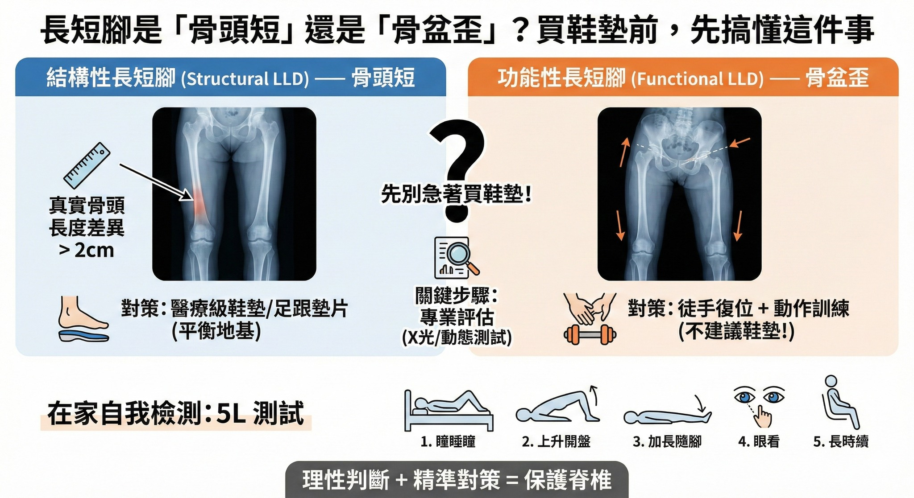

長短腳是「骨頭短」還是「骨盆歪」？買鞋墊前，先搞懂這件事
【 長短腳是「骨頭短」還是「骨盆歪」？買鞋墊前，先搞懂這件事 】
「醫生，總感覺我走路的時候 #一隻腳長一隻腳短 ，踏地好像不太平衡！」
「醫師，教練說我深蹲時重心會歪一邊，是不是我有 #長短腳 ，需要去 #訂做鞋墊 ？」
「先生，量測起來您左腳短了 1 公分喔，建議配這雙 #矯正鞋墊 ，不然脊椎可能會 #脊椎側彎 。」
在健身房被糾正動作，或是在買鞋、健檢時聽到這句話，相信很多人當下都會感到焦慮，擔心自己的身體結構出了大問題。
請 #先別急著下定論 ，或是急著購買輔具！
-
根據臨床醫學統計，雖然大部分的人雙腳長度確實都有細微差異，但絕大多數（約 90%）被認為是長短腳的案例，其實屬於 「 #功能性長短腳 (Functional LLD) 」。
也就是說：您的腿骨並沒有真的變短，很可能是您的骨盆「位置」跑掉了。
-
💡 醫學實證：區分「 #結構性 」與「 #功能性 」
在決定治療方針前，我們必須依據生物力學文獻，將長短腳 (LLD) 精確分為兩類：
1. 結構性長短腳 (Structural LLD) —— 這是骨頭的問題
- 定義：指大腿骨 (Femur) 或小腿骨 (Tibia) 的實際長度確實不一致。
- 成因：常源自先天發育不對稱、曾發生骨折、生長板受損或退化性關節炎。
- 對策：這類無法單靠運動改變。若差異顯著（通常指超過 2cm），適當的足跟墊片或醫療級鞋墊是必要的，能幫助平衡地基，減少關節磨損。
-
2. 功能性長短腳 (Functional LLD) —— 這是姿勢的問題
- 定義：骨頭長度一樣，但視覺上看起來一長一短。
- 成因：這是「骨盆力學」與「肌筋膜張力」在作怪。常見原因包括骨盆旋轉 (Pelvic rotation)、脊椎排列改變，或是單側肌肉（如腰方肌、髂腰肌）過度緊繃將骨盆拉歪。
- 對策：這時候墊高反而不適合。您需要的是『骨盆徒手復位』與『肌筋膜乾針』治療，並搭配『動作控制訓練』。
-
⚠️ 健身族注意：深蹲時的「 #隱形風險 」
為什麼釐清這點對重訓族群至關重要？
因為這裡涉及一個關鍵的力學原則：「外部平衡 ≠ 內部平衡 (Symmetrical External Loading ≠ Symmetrical Internal Loading)」。
即使您深蹲時，槓鈴在鏡子裡看起來是水平的（外部平衡），但若您存在長短腳問題（無論真假），體內的關節壓力早已失衡：
1. 重心偏移 (Shifted COM)：身體會不自覺將重量壓向某一側，導致單邊的髖關節與膝蓋承受過大壓力。
2. 代償鏈條：為了維持槓鈴水平，腰椎被迫做出微幅「側彎」來代償。這解釋了為什麼許多人**訓練量一拉高，總是痛同一邊的腰。
🚨 風險提示：
如果您是因「骨盆歪斜」造成的假性腿短，卻貿然使用鞋墊墊高，等於是在歪斜的地基上灌水泥。大腦會誤以為「現在平衡了」，進而將骨盆「固化」在錯誤的角度，長期下來反而可能讓姿勢定型，增加受傷風險。
-
🦵 在家自我檢測：簡易版「 #5L 測試 」
到底需不需要鞋墊？您可以透過這個改良自骨科檢查的步驟進行初步觀察：
1. Lie down（平躺）：全身放鬆平躺，雙腿自然伸直。
2. Lift hips（抬臀歸零）：做一個橋式將屁股抬離床面，讓骨盆張力歸零後放下。
3. Lengthen legs（伸直）：雙腿放鬆伸直。
4. Look（觀察）：請家人協助觀察雙腳內踝（腳踝內側骨頭）是否一高一低？
5. Long sit（坐起關鍵）：手不扶床，直接靠核心力量坐起來，再看一次內踝高度。
【關鍵判讀】：
如果坐起來後，原本短的那隻腳「突然變長了」或「變得跟另一腳一樣長」，這通常提示為 #功能性長短腳。
（原理：坐起動作會帶動骨盆旋轉，若是軟組織造成的假性腿短，長度常會隨姿勢改變。）
-
🛠 整合觀點總結歸納
面對長短腳，「評估」比「墊高」更重要。
- 針對功能性問題： 首重 Reset (重置) 與 Retrain (重訓)。透過中醫針灸與徒手治療將骨盆與脊椎復位，恢復正常肌筋膜張力，並針對核心肌群進行控制訓練，通常長度差異會顯著改善。
- 針對結構性問題： 須與專業輔具專家合作，逐步引入適合的支撐，重點在於負載管理，而非強求外觀上的絕對對稱。
-
👨⚕️ 醫師給你的建議
長短腳不只是一個外觀問題，它是一個直接影響你「 #訓練成效 」與「 #關節壽命 」！
1. 理性判斷： 聽到長短腳別緊張，先確認是 #骨頭短 還是 #骨盆歪 。
2. 尋求專業： 透過 5L 測試初步篩檢，若有疑慮，建議尋求專業醫療人員(醫師或物理治療師)進行 X 光測量與動態評估。
3. 精準對策： 結構性問題找輔具，功能性問題找治療。做對選擇，才能真正保護您的脊椎。
#長短腳 #LLD #深蹲 #重訓 #功能性長短腳 #骨盆歪斜 #矯正鞋墊 #5L測試 #生物力學 #中醫針傷 #中醫徒手
太初中醫診所 東門中醫
中醫師 黃彥鈞
---
🔎 參考文獻 (References)：
1. Knutson GA. (2005). Anatomic and functional leg-length inequality: a review. Chiropractic & Osteopathy. (指出 90% 的人有輕微長短腳，多為功能性且可透過治療改善)
2. Applebaum A, et al. (2021). The effects of leg length discrepancy on squat mechanics. (探討長短腳對深蹲、內部關節負載與運動表現的具體影響)
3. Gurney B. (2002). Leg length discrepancy. Gait & Posture. (詳細定義結構性與功能性差異，並指出 2cm 為臨床介入的重要分界點)
PS. 本文提供的「5L 測試」僅供初步篩檢參考，若您有持續性的背痛、步態跛行或雙腿長度差異極大（超過 2cm），請務必尋求專業醫療人員進行鑑別診斷與治療。
